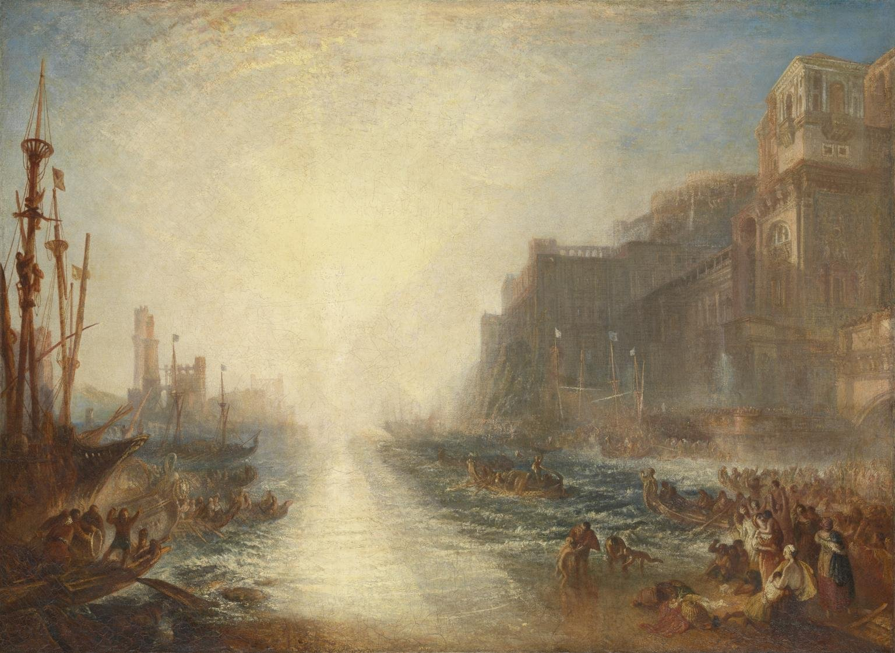
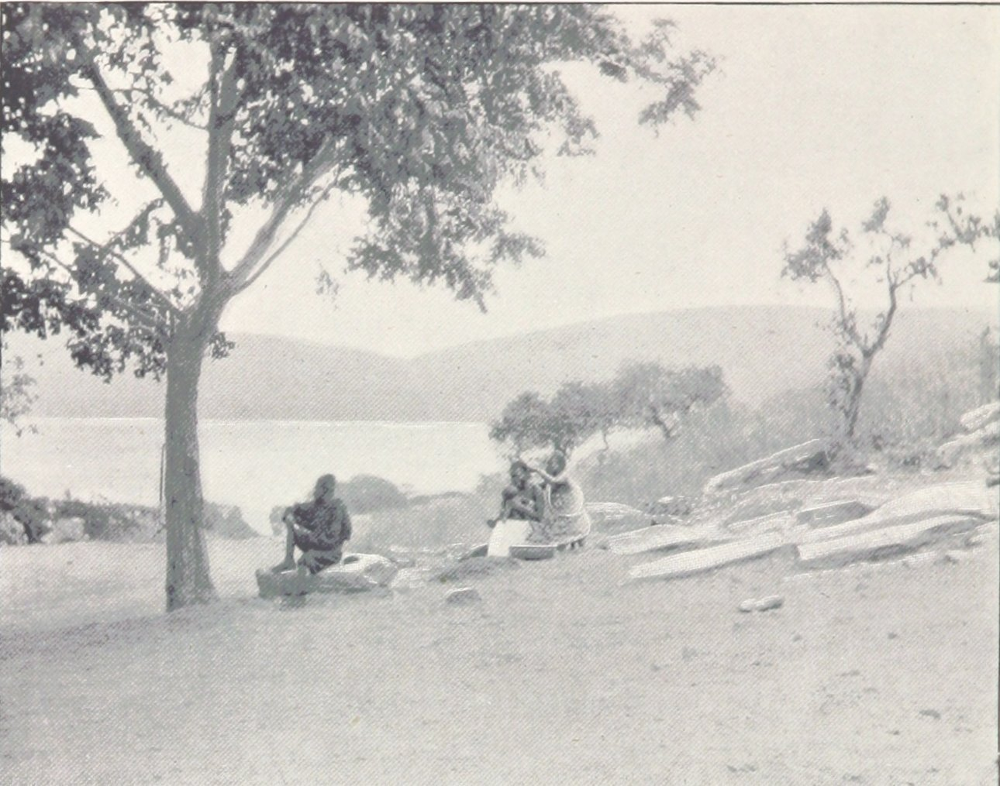
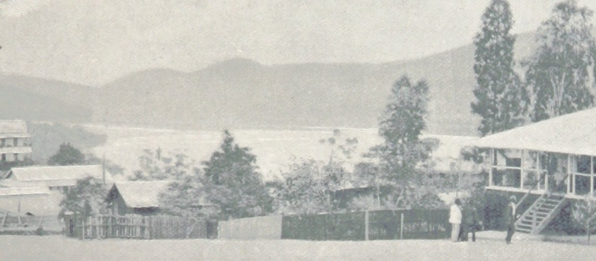

← 目次“It was upward of thirty days before I saw the mouth of the big river. We anchored off the seat of the government. But my work would not begin till some two hundred miles farther on. So as soon as I could I made a start for a place thirty miles higher up.
“I had my passage on a little sea-going steamer. Her captain was a Swede, and knowing me for a seaman, invited me on the bridge. He was a young man, lean, fair, and morose, with lanky hair and a shuffling gait. As we left the miserable little wharf, he tossed his head contemptuously at the shore. ‘Been living there?’ he asked. I said, ‘Yes.’ ‘Fine lot these government chaps—are they not?’ he went on, speaking English with great precision and considerable bitterness. ‘It is funny what some people will do for a few francs a month. I wonder what becomes of that kind when it goes upcountry?’ I said to him I expected to see that soon. ‘So-o-o!’ he exclaimed. He shuffled athwart, keeping one eye ahead vigilantly. ‘Don’t be too sure,’ he continued.
It is funny what some people will do for a few francs a month.
‘The other day I took up a man who hanged himself on the road. He was a Swede, too.’ ‘Hanged himself! Why, in God’s name?’ I cried. He kept on looking out watchfully. ‘Who knows? The sun too much for him, or the country perhaps.’
‘Hanged himself! Why, in God’s name?’ I cried. He kept on looking out watchfully. ‘Who knows? The sun too much for him, or the country perhaps.’
“At last we opened a reach. A rocky cliff appeared, mounds of turned-up earth by the shore, houses on a hill, others with iron roofs, amongst a waste of excavations, or hanging to the declivity. A continuous noise of the rapids above hovered over this scene of inhabited devastation. A lot of people, mostly black and naked, moved about like ants. A jetty projected into the river. A blinding sunlight drowned all this at times in a sudden recrudescence of glare. ‘There’s your Company’s station,’ said the Swede, pointing to three wooden barrack-like structures on the rocky slope. ‘I will send your things up. Four boxes did you say? So. Farewell.’

Jean Malvaux（写真製版）, Aux environs de Matadi／Public domain／Commons
“I came upon a boiler wallowing in the grass, then found a path leading up the hill. It turned aside for the boulders, and also for an undersized railway-truck lying there on its back with its wheels in the air. One was off. The thing looked as dead as the carcass of some animal. I came upon more pieces of decaying machinery, a stack of rusty rails. To the left a clump of trees made a shady spot, where dark things seemed to stir feebly. I blinked, the path was steep. A horn tooted to the right, and I saw the black people run. A heavy and dull detonation shook the ground, a puff of smoke came out of the cliff, and that was all. No change appeared on the face of the rock. They were building a railway. The cliff was not in the way or anything; but this objectless blasting was all the work going on.
No change appeared on the face of the rock. They were building a railway. The cliff was not in the way or anything; but this objectless blasting was all the work going on.

Jean Malvaux（写真製版）, Les hauteurs de Matadi／Public domain／Commons
“A slight clinking behind me made me turn my head. Six black men advanced in a file, toiling up the path. They walked erect and slow, balancing small baskets full of earth on their heads, and the clink kept time with their footsteps. Black rags were wound round their loins, and the short ends behind waggled to and fro like tails. I could see every rib, the joints of their limbs were like knots in a rope; each had an iron collar on his neck, and all were connected together with a chain whose bights swung between them, rhythmically clinking. Another report from the cliff made me think suddenly of that ship of war I had seen firing into a continent. It was the same kind of ominous voice; but these men could by no stretch of imagination be called enemies. They were called criminals, and the outraged law, like the bursting shells, had come to them, an insoluble mystery from the sea.
It was the same kind of ominous voice; but these men could by no stretch of imagination be called enemies.
All their meagre breasts panted together, the violently dilated nostrils quivered, the eyes stared stonily uphill. They passed me within six inches, without a glance, with that complete, deathlike indifference of unhappy savages. Behind this raw matter one of the reclaimed, the product of the new forces at work, strolled despondently, carrying a rifle by its middle. He had a uniform jacket with one button off, and seeing a white man on the path, hoisted his weapon to his shoulder with alacrity. This was simple prudence, white men being so much alike at a distance that he could not tell who I might be. He was speedily reassured, and with a large, white, rascally grin, and a glance at his charge, seemed to take me into partnership in his exalted trust. After all, I also was a part of the great cause of these high and just proceedings.
After all, I also was a part of the great cause of these high and just proceedings.